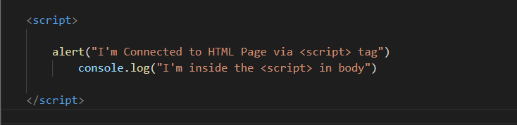
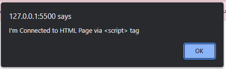
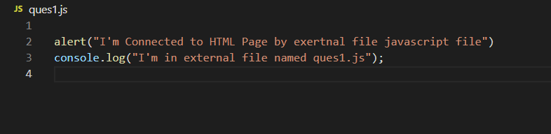
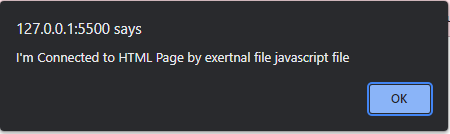
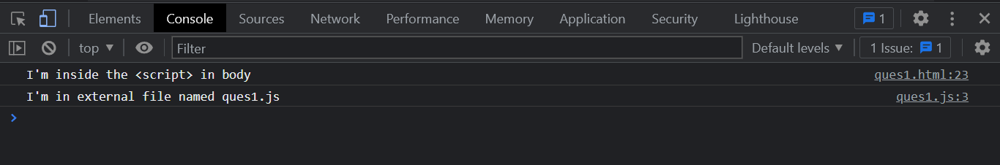

Writing the code in your HTML i.e. by using <srcipt> tag
 tag">Alert promt by internal <script> tag inside the body
Including it as a link to an external file
Alert promt from external javaScript file named Ques1.js
We can see the the statement which we wrote in js in console.
